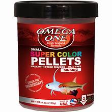
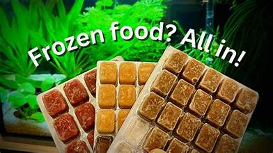
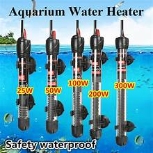

Types of Aquariums
Freshwater Aquarium

Freshwater aquariums are great for beginners and can house a variety of species.
Saltwater Aquarium

Saltwater aquariums require more maintenance but offer vibrant coral reefs and diverse fish.
Biotope Aquarium

Biotope aquariums replicate specific natural habitats, creating a unique environment for fish.
Fish Food Options 🚀
Flakes

Flake food is a popular choice for many freshwater fish and is easy to store and use.
Pellets
Pellets are great for larger fish and provide a balanced diet.
Frozen Food 🚀
Frozen food options include bloodworms and brine shrimp, which are highly nutritious.
Aquarium Accessories 🚀
Filters

Filters help maintain water quality by removing waste and toxins.
Heaters 🚀
Heaters keep the water at the right temperature for your fish.
Lighting 🚀

Proper lighting enhances the beauty of your aquarium and promotes plant growth.
Aquarium Maintenance Tips 🚀
Regular maintenance is key to a healthy aquarium:
- Perform regular water changes (10-20% weekly).
- Clean the substrate and decorations.
- Check and replace filter media as needed.
- Monitor water parameters regularly.